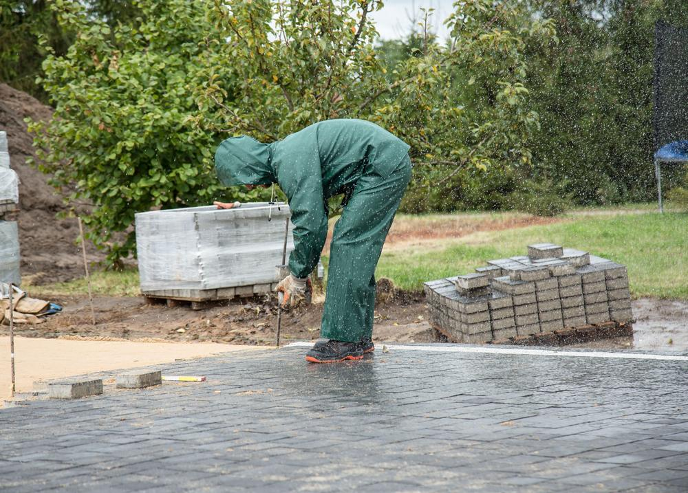
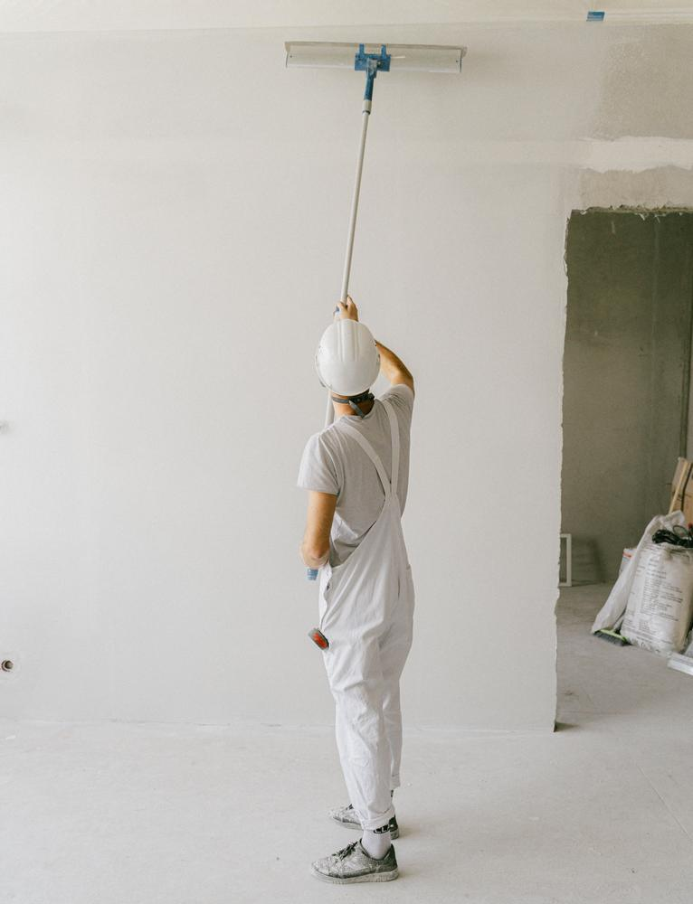

Free
A personalised tender alert
Tell us what work you do and where. We'll send you public-sector opportunities that fit, so you're not trawling procurement portals yourself.
Public-sector tenders for local contractors
Find the council and public contracts worth bidding for, and put in a stronger bid.
Tendderr is an independent service for small and mid-sized contractors in Yorkshire and neighbouring regions. We find suitable public-sector opportunities for your kind of work, help you decide which ones are worth your time, and can prepare the tender submission for you.
No forms, no sign-up. Or email us directly at hello@tendderr.com
Tendderr helps established contractors find and compete for public-sector work without spending hours searching procurement websites and completing paperwork.
We take a straightforward approach: find suitable opportunities, check whether they're worth pursuing and agree a fixed fee before undertaking any bid preparation.
Two things are free and carry no obligation. Bid preparation is paid, at a fixed fee we agree with you before any work starts.
Tell us what work you do and where. We'll send you public-sector opportunities that fit, so you're not trawling procurement portals yourself.
We'll review the main requirements, deadlines and potential barriers to help you decide whether the opportunity deserves a closer look.
If you decide to go for it, we'll prepare your tender submission with you for an agreed fixed fee. Fees are quoted per opportunity, so you know the cost up front.
Three simple stages, and you decide at each one whether to carry on.
Stage 1 · Free
You receive relevant public-sector contract information.
Stage 2 · Free
We help identify the main requirements and potential obstacles.
Stage 3 · Fixed fee
If you decide to proceed, we agree the scope and fixed fee before work begins.
Public-sector work can be steady and well run, but finding it and bidding for it takes time most small firms don't have.
Spend your time on opportunities that suit your size, your skills and your patch, not on ones you were never likely to win.
Hear about suitable opportunities in good time, so you're not finding out about them after the closing date.
A clear, well-organised submission that answers what the buyer has actually asked for, written in plain English.


Published figures about public buying in general. They are not Tendderr results and say nothing about any one firm's chances.
24 Feb 2025
the Procurement Act 2023 came into force, replacing the previous public procurement rules
Source: Cabinet Office, GOV.UK (2025)
30 days
payment terms now required for all public sector contracts
Source: Cabinet Office, GOV.UK (2025)
£30,000
or more (inc. VAT): if a council advertises a contract of this value, it must first publish it on the government's Find a Tender service (£12,000 for central government)
Source: Procurement Act 2023, s.87; GOV.UK guidance (2025)
Share of direct procurement spend that went to SMEs, by type of public buyer, England, 2024
In cash terms, local government spent £28.1bn directly with SMEs in 2024. Bars are drawn to a 0–100% scale.
Source: British Chambers of Commerce & Tussell, SME Procurement Tracker 2025, analysis of official published spend data (2024 figures)
How local government procurement spend in England was split, 2024
Source: British Chambers of Commerce & Tussell, SME Procurement Tracker 2025 (PDF) (2024 figures)
Latest update: in 2025, local government's share was 34% (£29.1bn), and 21% of all direct public sector procurement spend in England went to SMEs, the highest share in six years. Source: BCC & Tussell, SME Procurement Tracker 2026 (PDF) (2025 figures).
Owners and directors of small and mid-sized contracting firms, including many who have never bid for public work before.
No. Many of the firms we speak to have never bid for public work. We'll explain what's involved in plain terms and help you judge whether an opportunity is realistic for your business.
You send us a specific opportunity. We review what the buyer wants, what they're asking bidders to provide and how it fits your business, and point out the main requirements, deadlines and potential barriers, to help you decide whether the opportunity deserves a closer look. It's an initial check, not a full assessment or a bid, and there's no obligation.
Bid preparation is charged at a fixed fee, agreed with you before any work starts. Every tender is different, so we quote per opportunity based on what's involved. The tender alert and the initial suitability check are free.
No one honestly can. Buyers make the decision. What we can do is help you pick opportunities that suit you and put forward a clear, complete bid.
Email hello@tendderr.com with a line or two about what your business does and where you work. We'll get back to you.
Email us at hello@tendderr.com. Tell us what you do and where you work, and we'll take it from there.